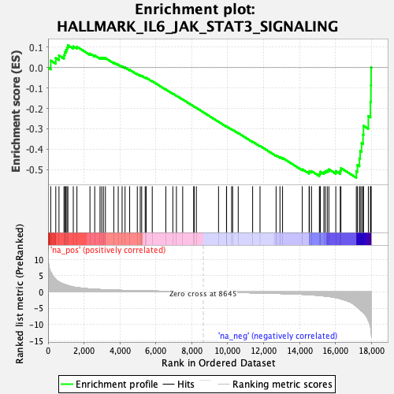
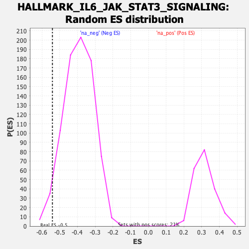

| | | Dataset | DE_genes2 |
| Phenotype | NoPhenotypeAvailable |
| Upregulated in class | na_neg |
| GeneSet | HALLMARK_IL6_JAK_STAT3_SIGNALING |
| Enrichment Score (ES) | -0.54094344 |
| Normalized Enrichment Score (NES) | -1.379747 |
| Nominal p-value | 0.025188917 |
| FDR q-value | 0.110641964 |
| FWER p-Value | 0.692 |
Table: GSEA Results Summary

Fig 1: Enrichment plot: HALLMARK_IL6_JAK_STAT3_SIGNALING
Profile of the Running ES Score & Positions of GeneSet Members on the Rank Ordered List
| SYMBOL | RANK IN GENE LIST | RANK METRIC SCORE | RUNNING ES | CORE ENRICHMENT | | 1 | CSF2RA | 149 | 5.994 | 0.0349 | No |
| 2 | EBI3 | 430 | 3.887 | 0.0473 | No |
| 3 | CD36 | 608 | 3.089 | 0.0598 | No |
| 4 | IL2RG | 887 | 2.345 | 0.0612 | No |
| 5 | TNF | 931 | 2.265 | 0.0751 | No |
| 6 | MAP3K8 | 991 | 2.157 | 0.0874 | No |
| 7 | CD9 | 1054 | 2.045 | 0.0987 | No |
| 8 | CD14 | 1104 | 1.950 | 0.1100 | No |
| 9 | SOCS3 | 1405 | 1.509 | 0.1042 | No |
| 10 | STAT1 | 1607 | 1.349 | 0.1027 | No |
| 11 | IL6 | 2333 | 0.914 | 0.0689 | No |
| 12 | ACVRL1 | 2598 | 0.819 | 0.0601 | No |
| 13 | LTBR | 2893 | 0.729 | 0.0489 | No |
| 14 | TNFRSF12A | 2985 | 0.704 | 0.0489 | No |
| 15 | IL6ST | 3082 | 0.679 | 0.0485 | No |
| 16 | PTPN1 | 3193 | 0.650 | 0.0471 | No |
| 17 | HAX1 | 3659 | 0.558 | 0.0252 | No |
| 18 | IL13RA1 | 3907 | 0.512 | 0.0151 | No |
| 19 | OSMR | 4123 | 0.478 | 0.0066 | No |
| 20 | MYD88 | 4288 | 0.454 | 0.0007 | No |
| 21 | PTPN2 | 4544 | 0.413 | -0.0105 | No |
| 22 | CSF3R | 4969 | 0.360 | -0.0316 | No |
| 23 | PTPN11 | 5135 | 0.341 | -0.0383 | No |
| 24 | ACVR1B | 5214 | 0.332 | -0.0403 | No |
| 25 | LEPR | 5408 | 0.311 | -0.0488 | No |
| 26 | GRB2 | 5465 | 0.304 | -0.0497 | No |
| 27 | TLR2 | 5802 | 0.268 | -0.0665 | No |
| 28 | BAK1 | 6557 | 0.196 | -0.1071 | No |
| 29 | CSF2 | 6948 | 0.160 | -0.1277 | No |
| 30 | IL15RA | 7148 | 0.143 | -0.1377 | No |
| 31 | IFNGR2 | 7497 | 0.111 | -0.1563 | No |
| 32 | IL10RB | 8110 | 0.049 | -0.1901 | No |
| 33 | STAM2 | 8135 | 0.047 | -0.1911 | No |
| 34 | LTB | 8258 | 0.035 | -0.1976 | No |
| 35 | STAT2 | 9493 | -0.078 | -0.2658 | No |
| 36 | STAT3 | 9936 | -0.123 | -0.2896 | No |
| 37 | IFNAR1 | 9943 | -0.123 | -0.2890 | No |
| 38 | IL4R | 10223 | -0.152 | -0.3035 | No |
| 39 | CSF2RB | 10278 | -0.158 | -0.3053 | No |
| 40 | FAS | 10589 | -0.188 | -0.3213 | No |
| 41 | TYK2 | 11392 | -0.287 | -0.3639 | No |
| 42 | PIK3R5 | 11804 | -0.335 | -0.3844 | No |
| 43 | CBL | 12698 | -0.463 | -0.4308 | No |
| 44 | TNFRSF1A | 12914 | -0.498 | -0.4392 | No |
| 45 | IFNGR1 | 13059 | -0.524 | -0.4434 | No |
| 46 | PIM1 | 14157 | -0.754 | -0.4991 | No |
| 47 | IL17RA | 14536 | -0.878 | -0.5139 | No |
| 48 | JUN | 14553 | -0.885 | -0.5084 | No |
| 49 | CSF1 | 14672 | -0.925 | -0.5083 | No |
| 50 | IL12RB1 | 15109 | -1.098 | -0.5246 | Yes |
| 51 | HMOX1 | 15148 | -1.122 | -0.5187 | Yes |
| 52 | IRF9 | 15164 | -1.131 | -0.5114 | Yes |
| 53 | SOCS1 | 15360 | -1.243 | -0.5133 | Yes |
| 54 | PDGFC | 15440 | -1.289 | -0.5084 | Yes |
| 55 | IRF1 | 15548 | -1.346 | -0.5046 | Yes |
| 56 | TGFB1 | 15638 | -1.402 | -0.4995 | Yes |
| 57 | CD44 | 16023 | -1.772 | -0.5081 | Yes |
| 58 | ITGB3 | 16273 | -2.100 | -0.5068 | Yes |
| 59 | TNFRSF1B | 16308 | -2.155 | -0.4932 | Yes |
| 60 | IL17RB | 17166 | -4.425 | -0.5090 | Yes |
| 61 | IL1B | 17227 | -4.727 | -0.4783 | Yes |
| 62 | CXCL3 | 17339 | -5.337 | -0.4460 | Yes |
| 63 | ITGA4 | 17380 | -5.482 | -0.4087 | Yes |
| 64 | IL7 | 17460 | -5.860 | -0.3708 | Yes |
| 65 | TNFRSF21 | 17539 | -6.232 | -0.3302 | Yes |
| 66 | CXCL1 | 17566 | -6.391 | -0.2856 | Yes |
| 67 | CXCL11 | 17836 | -8.698 | -0.2379 | Yes |
| 68 | CCL7 | 17952 | -10.571 | -0.1681 | Yes |
| 69 | IL1R1 | 17979 | -11.460 | -0.0869 | Yes |
| 70 | A2M | 17990 | -12.301 | 0.0013 | Yes |
Table: GSEA details [plain text format]

Fig 2: HALLMARK_IL6_JAK_STAT3_SIGNALING: Random ES distribution
Gene set null distribution of ES for HALLMARK_IL6_JAK_STAT3_SIGNALING